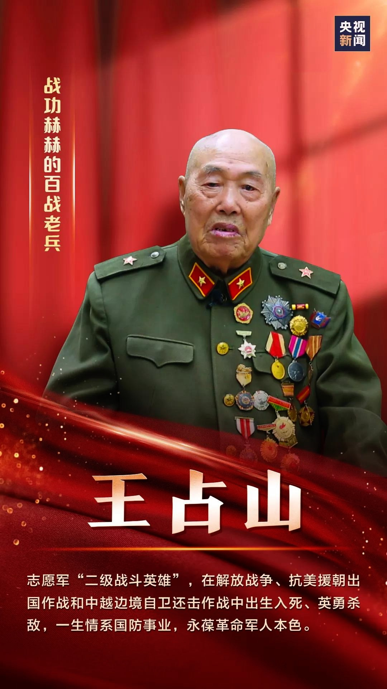

七一勋章
七一勋章

“七一勋章”是党内最高荣誉，蕴藏着对党忠诚、为民服务、不忘初心、砥砺前行的精神力量。广大党员干部要读懂“七一勋章”背后的精神密码、时代意义，砥砺初心使命、永葆斗争精神，更加自觉地为实现党的历史使命而不懈奋斗。 现在，以“七一”勋章获得者为代表的时代楷模也激励着年轻一代勇担使命，赓续伟大精神继续前进。因为继承奉献精神，我们看到毅然投身农村建设的黄文秀；因为继承担当精神，我们看到武汉疫情防控中的“90后”支柱力量；因为继承为民情怀，我们看到心系群众的李夏。心中有信仰，脚下有力量。新征程路上，年轻一代在伟大精神光辉的激励和指引下，必将接续奋斗，砥砺前进。
获得勋章人物
- 


人物事迹
有所感悟
勋章闪烁着功勋者大无畏的奉献精神。“宝剑锋从磨砺出，梅花香自苦寒来。”“七一勋章”是党内的最高荣誉，“七一勋章”的背后，是功勋模范的奉献精神，作为新时代新青年，当以榜样为引领，学习勋章获得者身上闪烁着克己奉公、爱岗尽业、无私奉献的拼搏精神，传承好他们身上大无畏的奉献精神